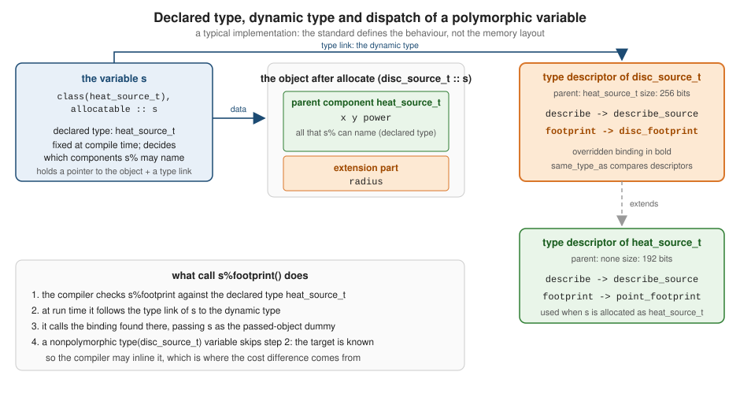

Object Oriented Programming
|
This content was generated with the assistance of AI and should be verified against the official documentation before being relied on in production. |
This page is written against Fortran 2023 (ISO/IEC 1539-1:2023, J3/23-007r1) and was checked on 2026-10-19. Every example
was compiled warning-free with gfortran -std=f2023 -Wall -Wextra -pedantic -fimplicit-none -fcheck=all (GNU Fortran 16.2)
and run, and the examples were also built and run with LLVM Flang 23; the output shown is real output, and the
compilers agree unless the text says otherwise. Examples that are deliberately wrong, or that expose a difference between
the compilers, are labelled as such and show the real diagnostics. The rules are in these places in the standard: the class type
specifier is 7.3.2.3 and type compatibility 7.3.3, type extension is 7.5.7 (extensible, extended and abstract types, inheritance, overriding),
the structure constructor is 7.5.10, the allocate statement is 9.7.1, intrinsic assignment is 10.2.1.2 and 10.2.1.3, the associate
construct is 11.1.3 and the select type construct is 11.1.11. The intrinsic functions are extends_type_of (16.9.86),
same_type_as (16.9.177), move_alloc (16.9.147) and storage_size (16.9.200), and the rules for polymorphic actual
and dummy arguments are in 15.5.2.4 to 15.5.2.8.
Fortran has had object-oriented features since Fortran 2003. A derived type can be extended into a new type that has
all the components and bindings of its parent plus its own, a variable declared with class can hold a value of its
declared type or of any extension at run time, and a call through such a variable runs the code of the dynamic type. That
is single inheritance with run-time polymorphism, in the same family as the classes of Java or C++ and unlike the trait
based design of Rust or the interface satisfaction of Go. This page covers the language mechanisms: extension,
polymorphic variables, allocation and assignment, the select type and associate constructs, unlimited polymorphism,
heterogeneous containers, and what dynamic dispatch costs. The things that a class definition is made of, components,
default initialization and structure constructors, are in Derived Types;
parameterized types are in Parameterized Derived Types;
type-bound procedures, overriding rules, abstract types, deferred bindings and finalization are in
Type-Bound Procedures, Abstract Types and Finalization;
and generic bindings and defined operators are in
Interfaces, Generics and Operator Overloading.
Vocabulary: Fortran terms for object-oriented ideas
| Idea in other languages | Fortran construct | Notes |
|---|---|---|
class |
a derived type, usually in a module, with |
no separate "class" keyword: |
object, instance |
a variable of the type (a data object) |
objects are values: a |
method |
type-bound procedure, |
the object is passed explicitly as the first dummy argument, |
|
the passed-object dummy argument, |
it must be polymorphic for an extensible type (7.5.4.5, C765) |
inheritance |
|
single inheritance only; the parent type must be extensible |
virtual method |
any ordinary type-bound procedure |
bindings are dispatched on the dynamic type unless declared |
abstract class, pure virtual method |
|
see the next page of this section |
interface, trait |
an abstract type with only deferred bindings |
there is no "implements": a type can extend one parent only |
reference or pointer of base type |
|
a |
|
|
there are no unchecked casts |
|
|
not |
constructor |
structure constructor |
covered in Derived Types |
destructor |
|
covered in Type-Bound Procedures, Abstract Types and Finalization |
|
|
access is controlled by the module, not by the type: there is no |
There is no separate namespace for a type’s members and no implicit object: a call call s%describe() is the call
describe_source(s) with the object in the first argument position, selected by the binding on the type of s.
Mixing the two styles is routine in Fortran code: object-based programming (derived types with bindings, no extension)
is common and costs nothing at run time, and object-oriented programming (extension and polymorphism) is used where a
set of variants must be chosen at run time. The section Object-based or object-oriented says when each one fits.
Running examples: heat sources and the heatflow solvers
Two hierarchies are used. The first one is small and only exists for this page: a heat source in the plate that
heatflow simulates, with a point source as the root and two extensions. The second one is the real hierarchy of
heatflow, solver_t and its Jacobi and FTCS extensions, shown in The heatflow solver hierarchy.
Most examples use this module. The type heat_source_t has an inherited-by-everyone binding describe and a binding
footprint that the extensions override; describe calls footprint through self, which is the smallest example of
dynamic dispatch: the same line of code, self%footprint(), runs different procedures for different dynamic types.
module heatflow_sources
use, intrinsic :: iso_fortran_env, only: real64
implicit none
private
public :: dp, heat_source_t, disc_source_t, line_source_t
integer, parameter :: dp = real64
real(dp), parameter :: pi = 3.14159265358979323846_dp
type :: heat_source_t
real(dp) :: x = 0.0_dp ! position in the plate
real(dp) :: y = 0.0_dp
real(dp) :: power = 0.0_dp ! watts
contains
procedure :: describe => describe_source
procedure :: footprint => point_footprint
end type heat_source_t
type, extends(heat_source_t) :: disc_source_t
real(dp) :: radius = 0.1_dp
contains
procedure :: footprint => disc_footprint
end type disc_source_t
type, extends(heat_source_t) :: line_source_t
real(dp) :: length = 1.0_dp
real(dp) :: width = 0.01_dp
contains
procedure :: footprint => line_footprint
end type line_source_t
contains
subroutine describe_source(self)
class(heat_source_t), intent(in) :: self
print '(a, 2f6.2, a, f7.2, a, f8.5)', ' source at', self%x, self%y, ' power', self%power, &
' W footprint', self%footprint()
end subroutine describe_source
real(dp) function point_footprint(self) result(area)
class(heat_source_t), intent(in) :: self
area = 0.0_dp ! an ideal point source covers no area
end function point_footprint
real(dp) function disc_footprint(self) result(area)
class(disc_source_t), intent(in) :: self
area = pi * self%radius**2
end function disc_footprint
real(dp) function line_footprint(self) result(area)
class(line_source_t), intent(in) :: self
area = self%length * self%width
end function line_footprint
end module heatflow_sourcesSource: J3/23-007r1: 7.5.7 Type extension, 7.5.7.1 Extensible, extended, and abstract types, 7.5.7.2 Inheritance and 7.5.10 Construction of derived-type values, Fortran Programming Language: Object-oriented programming techniques
The examples after this one need the module to be compiled first, for instance
gfortran -std=f2023 -Wall -Wextra -pedantic -fimplicit-none -fcheck=all sources_mod.f90 01_extension.f90, and the
listings below start at the first program unit that is not in this module.
Type extension
A derived type is extensible unless it has the sequence or bind(c) attribute or is c_ptr or c_funptr from
iso_c_binding (7.5.7.1). Writing extends(parent) in the type statement creates an extended type. Its parent type is
the one named; an extension of a type is the type itself or any type that extends it, directly or through other
types. A type has one parent at most, so the extension relation forms a tree with extensible types at the roots.
An extended type inherits (7.5.7.2):
-
all the type parameters and components of the parent (and of its ancestors), with the attributes they had, and
-
all the type-bound procedures of the parent that it does not override.
It may add components and bindings of its own, and it has a parent component: a scalar, nonpointer, nonallocatable
component whose name is the name of the parent type and whose type is the parent type. The inherited components are
addressable directly (disc%x) or through the parent component (disc%heat_source_t%x). A component or type parameter of
the extension cannot have the same name as an accessible one of its parent. If the extended type is defined in a module,
the parent component has the accessibility that the parent type has in the module that defines the parent (7.5.7.2).
The program below builds one value of each type of the module above, uses both ways to address an inherited component, calls an inherited binding and an overridden binding on every type, and copies the parent component into a variable of the parent type.
program type_extension
use heatflow_sources
implicit none
type(heat_source_t) :: plain
type(disc_source_t) :: disc
type(line_source_t) :: line
plain = heat_source_t(0.25_dp, 0.75_dp, 5.0_dp)
! The structure constructor of an extended type takes the parent component first ...
disc = disc_source_t(heat_source_t(0.5_dp, 0.5_dp, 20.0_dp), 0.05_dp)
! ... or the parent component by keyword, followed by the new components.
line = line_source_t(heat_source_t = heat_source_t(0.1_dp, 0.9_dp, 8.0_dp), length = 0.4_dp, width = 0.02_dp)
! The inherited components may also be set by keyword.
disc = disc_source_t(x = 0.5_dp, y = 0.5_dp, power = 20.0_dp, radius = 0.05_dp)
! Inherited components are addressed directly, or through the parent component.
print '(a, f6.2, a, f6.2)', 'disc%x =', disc%x, ' disc%heat_source_t%x =', disc%heat_source_t%x
disc%heat_source_t%power = disc%power * 1.5_dp
print '(a, f6.2, a, f6.2)', 'disc%radius =', disc%radius, ' power after scaling =', disc%power
! The inherited binding describe works on every extension; footprint is overridden.
call plain%describe()
call disc%describe()
call line%describe()
! The parent component is an ordinary variable of the parent type.
plain = disc%heat_source_t
print '(a, f6.2, a, f8.5)', 'plain after copying the parent component: power =', plain%power, &
' footprint', plain%footprint()
print '(a, i0, a, i0, a, i0)', 'storage_size in bits: parent ', storage_size(plain), ', disc ', &
storage_size(disc), ', line ', storage_size(line)
end program type_extensionOutput:
disc%x = 0.50 disc%heat_source_t%x = 0.50
disc%radius = 0.05 power after scaling = 30.00
source at 0.25 0.75 power 5.00 W footprint 0.00000
source at 0.50 0.50 power 30.00 W footprint 0.00785
source at 0.10 0.90 power 8.00 W footprint 0.00800
plain after copying the parent component: power = 30.00 footprint 0.00000
storage_size in bits: parent 192, disc 256, line 320Source: J3/23-007r1: 7.5.7 Type extension, 7.5.7.1 Extensible, extended, and abstract types, 7.5.7.2 Inheritance and 7.5.10 Construction of derived-type values, Fortran Programming Language: Object-oriented programming techniques
Four details are worth knowing:
-
Structure constructors take the parent component first.
disc_source_t(heat_source_t(...), 0.05_dp)gives the parent component, a value of the parent type, followed by the components the extension adds. The parent component can also be given by keyword, which is the type name of the parent:heat_source_t = heat_source_t(...). The inherited components are components of the extended type too, so each one can be given by keyword (disc_source_t(x = 0.5_dp, ..., radius = 0.05_dp)in the program above). A constructor cannot give both the parent component and one of its inherited components, and a component without default initialization must be given (7.5.10, C7103 to C7107). Positional values always start with the parent component, never with the inherited componentx. -
storage_sizereports the whole object. The 192 bits of the parent are three 64-bit reals, and each extension adds its own components to that; the 256 and 320 bits printed above are the sizes ofdisc_source_tandline_source_t. The hidden information that identifies the dynamic type of a polymorphic variable is not counted, because a compiler is free to keep it in the variable rather than in the object. The standard fixes the behaviour, not the layout (the sketch in Polymorphic entities: class shows one common arrangement). -
Extension is an is-a relation, not a union.
plain = disc%heat_source_tis an ordinary assignment of the parent part. Assigningdiscitself to atype(heat_source_t)variable does not compile: derived-type intrinsic assignment requires the same declared type (Table 10.8 in 10.2.1.2), and GNU Fortran 16.2 says "Cannot convert TYPE(disc_source_t) to TYPE(heat_source_t)", while Flang 23 says that no intrinsic or user-defined assignment matches the operand types. Section Polymorphic assignment and slicing shows the assignments that are allowed. -
Overriding is checked by the compiler. An overriding binding must have the same name, the same dummy arguments (names and characteristics) except for the passed-object dummy, which is
class(disc_source_t)instead ofclass(heat_source_t), and the same result characteristics, and it must not be less accessible than the overridden one (7.5.7.3). The rules,non_overridable, and abstract bindings are the topic of Type-Bound Procedures, Abstract Types and Finalization.
What cannot be extended or redeclared
The following program is deliberately non-conforming: it tries to extend a sequence type, to extend a bind(c) type
and to redeclare a component that the parent already has.
! INTENTIONALLY NON-CONFORMING: extending a sequence type and a bind(c) type, and redeclaring a parent component.
module bad_extension
use, intrinsic :: iso_c_binding, only: c_double
implicit none
type :: packed_t
sequence
real :: a
end type packed_t
type, bind(c) :: c_point_t
real(c_double) :: x, y
end type c_point_t
type, extends(packed_t) :: from_sequence
real :: b
end type from_sequence
type, extends(c_point_t) :: from_bind_c
real(c_double) :: z
end type from_bind_c
type :: base_t
real :: x
end type base_t
type, extends(base_t) :: dup_t
real :: x
end type dup_t
end module bad_extensionDiagnostics from gfortran -std=f2023 -Wall -Wextra -pedantic -fimplicit-none -fcheck=all; the two "Expecting END MODULE" messages are
follow-on errors that the compiler produces after rejecting an extends clause, and are not separate mistakes:
02_extension_errors.f90:13:26:
13 | type, extends(packed_t) :: from_sequence
| 1
Error: 'packed_t' cannot be extended at (1) because it is a SEQUENCE type
02_extension_errors.f90:15:5:
15 | end type from_sequence
| 1
Error: Expecting END MODULE statement at (1)
02_extension_errors.f90:17:27:
17 | type, extends(c_point_t) :: from_bind_c
| 1
Error: 'c_point_t' cannot be extended at (1) because it is BIND(C)
02_extension_errors.f90:19:5:
19 | end type from_bind_c
| 1
Error: Expecting END MODULE statement at (1)
02_extension_errors.f90:25:13:
21 | type :: base_t
| 2
......
25 | real :: x
| 1
Error: Component 'x' at (1) already in the parent type at (2)Diagnostics from LLVM Flang 23 for the same file:
error: Semantic errors in 02_extension_errors.f90
02_extension_errors.f90:13:30: error: The parent type is not extensible
type, extends(packed_t) :: from_sequence
^^^^^^^^^^^^^
02_extension_errors.f90:17:31: error: The parent type is not extensible
type, extends(c_point_t) :: from_bind_c
^^^^^^^^^^^
02_extension_errors.f90:25:13: error: Component 'x' is already declared in a parent of this derived type
real :: x
^
02_extension_errors.f90:22:13: Previous declaration of 'x'
real :: x
^Source: J3/23-007r1: 7.5.7.1 Extensible, extended, and abstract types and 7.5.7.2 Inheritance, NOTE 3
Types meant for C interoperability (bind(c)) or for storage association (sequence) have a fixed layout that must not
carry hidden type information, which is why they cannot take part in extension; Interoperability with C
shows how to wrap a bind(c) type in an ordinary type when an object-oriented interface is wanted.
Private components and extension
Accessibility is a property of the module, so extension across modules interacts with private. A type’s private
components are inherited by its extensions but stay inaccessible outside the module that defines the parent (7.5.7.2,
NOTE 1). The binding of the parent, which is defined in the parent’s module, can still use them. The two
modules below define a sensor with a private calibration offset, extend it in another module and use the extension from the
main program. The offset has a default value, so it may be left out of the structure constructor, and the inherited
binding calibrated still uses it.
module sensors_base
implicit none
private
public :: sensor_t
type :: sensor_t
integer :: id = 0 ! public component
real :: reading = 0.0 ! public component
real, private :: offset = 0.5 ! private: invisible outside this module, but part of every extension
contains
procedure :: calibrated => sensor_calibrated
end type sensor_t
contains
real function sensor_calibrated(self) result(r)
class(sensor_t), intent(in) :: self
r = self%reading - self%offset
end function sensor_calibrated
end module sensors_base
module sensors_probe
use sensors_base, only: sensor_t
implicit none
private
public :: probe_t
type, extends(sensor_t) :: probe_t
real :: depth = 0.0
end type probe_t
end module sensors_probe
program private_components
use sensors_base, only: sensor_t
use sensors_probe, only: probe_t
implicit none
type(probe_t) :: p
! The private component keeps its default initialization, so it may be left out of the constructor.
p = probe_t(sensor_t(7, 20.0), 1.5)
print '(a, f5.2)', 'calibrated (uses the private offset through the inherited binding): ', p%calibrated()
! print *, p%offset ! error: offset is private to sensors_base
end program private_componentsOutput:
calibrated (uses the private offset through the inherited binding): 19.50The main program of that example names the type sensor_t itself, so it has to use it from sensors_base: the structure constructor needs the type name to
be accessible in the scoping unit (C7107). Naming the private component from outside the module is rejected, by both
compilers (the two modules of the previous listing are compiled first, and the main program of that listing is not needed):
! INTENTIONALLY NON-CONFORMING: the private component and the structure constructor of an extension.
program bad_private
use sensors_probe
implicit none
type(probe_t) :: p
print *, p%offset
end program bad_privateDiagnostics from GNU Fortran 16.2, then LLVM Flang 23:
20_private_errors.f90:6:19:
6 | print *, p%offset
| 1
Error: Component 'offset' at (1) is a PRIVATE component of 'sensor_t'
error: Semantic errors in 20_private_errors.f90
20_private_errors.f90:6:14: error: PRIVATE name 'offset' is accessible only within module 'sensors_base'
print *, p%offset
^^^^^^Polymorphic entities: class
A variable declared class(t), where t is an extensible type, is polymorphic (7.3.2.3). It has two types:
-
its declared type
t, fixed in the source, which decides which components, bindings and arguments are valid, and -
its dynamic type, which is
tor any extension oft, and which can change during execution.
The dynamic type is determined as follows (7.3.2.3):
-
of an allocated allocatable polymorphic variable, the type it was allocated with;
-
of an associated polymorphic pointer, the dynamic type of its target;
-
of a nonallocatable nonpointer polymorphic dummy argument, the dynamic type of its actual argument;
-
of an unallocated allocatable variable or a disassociated pointer, its declared type;
-
of an associating entity of
associateorselect type, the dynamic type of the selector; -
of an entity that is not polymorphic, its declared type.
A class entity must be a dummy argument or have the allocatable or pointer attribute (C708): a plain local
variable has a single type for its whole life and gains nothing from being polymorphic, and the compiler needs a descriptor
to hold the dynamic type. The type named in class must be extensible (C705).

The figure shows one common arrangement; the standard prescribes the observable behaviour (which binding runs, which
type guard matches), not the layout. Type compatibility (7.3.3) is the rule that says what may be associated with
what: a nonpolymorphic entity is type compatible only with entities of the same declared type, a polymorphic one with entities of its
declared type or any extension, and an unlimited polymorphic one with all entities. The relation is not symmetric:
class(heat_source_t) is type compatible with a class(disc_source_t) entity, but not the other way round.
The next program declares an allocatable and a pointer of declared type heat_source_t, gives them values of different
dynamic types, and prints what same_type_as and extends_type_of report for the dynamic type inside a polymorphic
dummy argument. same_type_as(a, b) is true when the dynamic types of both are the same extensible type;
extends_type_of(a, mold) is true when the dynamic type of a is the dynamic type of mold or an extension of it
(16.9.177 and 16.9.86). Both look only at the dynamic type, never at the value, so a variable with a disassociated pointer or
an unallocated allocatable can be used as the mold.
program polymorphic_variables
use heatflow_sources
implicit none
type(heat_source_t) :: point_mold
type(disc_source_t) :: disc_mold
type(disc_source_t), target :: stove
class(heat_source_t), allocatable :: s
class(heat_source_t), pointer :: p
! An unallocated allocatable: the dynamic type is the declared type.
print '(a, l1)', 'unallocated: same_type_as(s, point_mold) = ', same_type_as(s, point_mold)
allocate (disc_source_t :: s) ! typed allocation: dynamic type disc_source_t
call inspect('allocated as disc_source_t', s)
deallocate (s)
allocate (s, source=heat_source_t(0.2_dp, 0.2_dp, 3.0_dp))
call inspect('reallocated as heat_source_t', s)
stove = disc_source_t(heat_source_t(0.5_dp, 0.5_dp, 40.0_dp), 0.15_dp)
p => stove ! a polymorphic pointer takes the dynamic type of its target
call inspect('pointer to a disc_source_t', p)
call p%describe()
nullify (p) ! disassociated: dynamic type is the declared type again
print '(a, l1)', 'disassociated: same_type_as(p, point_mold) = ', same_type_as(p, point_mold)
contains
! A polymorphic dummy argument: the declared type is heat_source_t, the dynamic type is the actual's.
subroutine inspect(label, src)
character(len=*), intent(in) :: label
class(heat_source_t), intent(in) :: src
print '(a, a)', label, ':'
print '(a, l1, a, l1)', ' same_type_as(src, point_mold) = ', same_type_as(src, point_mold), &
' same_type_as(src, disc_mold) = ', same_type_as(src, disc_mold)
print '(a, l1, a, l1)', ' extends_type_of(src, point_mold) = ', extends_type_of(src, point_mold), &
' extends_type_of(src, disc_mold) = ', extends_type_of(src, disc_mold)
print '(a, i0)', ' storage_size(src) in bits = ', storage_size(src)
end subroutine inspect
end program polymorphic_variablesOutput:
unallocated: same_type_as(s, point_mold) = T
allocated as disc_source_t:
same_type_as(src, point_mold) = F same_type_as(src, disc_mold) = T
extends_type_of(src, point_mold) = T extends_type_of(src, disc_mold) = T
storage_size(src) in bits = 256
reallocated as heat_source_t:
same_type_as(src, point_mold) = T same_type_as(src, disc_mold) = F
extends_type_of(src, point_mold) = T extends_type_of(src, disc_mold) = F
storage_size(src) in bits = 192
pointer to a disc_source_t:
same_type_as(src, point_mold) = F same_type_as(src, disc_mold) = T
extends_type_of(src, point_mold) = T extends_type_of(src, disc_mold) = T
storage_size(src) in bits = 256
source at 0.50 0.50 power 40.00 W footprint 0.07069
disassociated: same_type_as(p, point_mold) = TSource: J3/23-007r1: 7.3.2.3 CLASS type specifier, 7.3.3 Type compatibility, 16.9.86 EXTENDS_TYPE_OF and 16.9.177 SAME_TYPE_AS, Fortran Programming Language: Object-oriented programming techniques
Note the first and last lines: before the allocation and after the pointer is disassociated, the dynamic type is the
declared type, so same_type_as against a heat_source_t value is true. It is not an error to ask, but it means
that a polymorphic entity that is not allocated cannot be told apart from one holding the base type by these two
functions; test allocated or associated first. extends_type_of is true when the types are the same (a type is an extension of itself), which is why it
reported true for disc_mold when the dynamic type was disc_source_t.
The standard notes (16.9.86, NOTE 2) that extends_type_of is not the same test as the type guard class is in a
select type construct: the intrinsic ignores kind type parameters. Both are inquiry tools; ordinary code should prefer
a type-bound procedure over asking for the type, and use select type when it needs the extension’s components.
Where a polymorphic entity may and may not appear
The following module is deliberately non-conforming. It declares a polymorphic local variable that is not allocatable, refers to a component of an extension through a variable declared with the parent type, and passes a polymorphic actual argument to a nonpolymorphic dummy argument of a different declared type.
! INTENTIONALLY NON-CONFORMING: where a polymorphic entity may and may not be declared,
! and what a polymorphic entity may do.
module bad_polymorphism
implicit none
type :: base_t
real :: x = 0.0
end type base_t
type, extends(base_t) :: child_t
real :: y = 0.0
end type child_t
contains
subroutine plain_local()
class(base_t) :: c ! error: neither dummy, allocatable nor pointer
print *, c%x
end subroutine plain_local
subroutine use_child_component(b)
class(base_t), intent(in) :: b
print *, b%y ! error: y is not a component of the declared type
end subroutine use_child_component
subroutine pass_to_type_dummy(c)
class(child_t), intent(in) :: c
call take_base(c) ! error: type(base_t) dummy, class(child_t) actual
end subroutine pass_to_type_dummy
subroutine take_base(b)
type(base_t), intent(in) :: b
print *, b%x
end subroutine take_base
end module bad_polymorphismDiagnostics from gfortran -std=f2023 -Wall -Wextra -pedantic -fimplicit-none -fcheck=all, in the order the compiler reported them:
04_declaration_errors.f90:19:17:
19 | print *, b%y ! error: y is not a component of the declared type
| 1
Error: 'y' at (1) is not a member of the 'base_t' structure
04_declaration_errors.f90:13:22:
13 | class(base_t) :: c ! error: neither dummy, allocatable nor pointer
| 1
Error: CLASS variable 'c' at (1) must be dummy, allocatable or pointer
04_declaration_errors.f90:24:90:
24 | call take_base(c) ! error: type(base_t) dummy, class(child_t) actual
| 1
Error: Type mismatch in argument 'b' at (1); passed CLASS(child_t) to TYPE(base_t)Diagnostics from LLVM Flang 23:
error: Semantic errors in 04_declaration_errors.f90
04_declaration_errors.f90:13:22: error: CLASS entity 'c' must be a dummy argument, allocatable, or object pointer
class(base_t) :: c ! error: neither dummy, allocatable nor pointer
^
04_declaration_errors.f90:19:16: error: Component 'y' not found in derived type 'base_t'
print *, b%y ! error: y is not a component of the declared type
^
04_declaration_errors.f90:5:11: Declaration of derived type 'base_t'
type :: base_t
^^^^^^
04_declaration_errors.f90:24:20: error: Actual argument type 'CLASS(child_t)' is not compatible with dummy argument type 'base_t'
call take_base(c) ! error: type(base_t) dummy, class(child_t) actual
^The second error is the fundamental discipline of polymorphism: through a class(base) variable only the
components and bindings of base exist. Reaching y of an extension needs select type (see select type). The third shows that a
polymorphic actual argument may be passed to a nonpolymorphic dummy argument only when the declared types are the same:
the dummy then becomes argument associated with the declared-type part of the actual (15.5.2.4), which slices the extension
off. To pass the parent part of a class(child_t) variable, pass its parent component: c%base_t.
Typed and sourced allocation
A polymorphic allocatable variable gets its dynamic type from the allocate statement. There are three forms (9.7.1):
| Form | Dynamic type and value | Notes |
|---|---|---|
|
the declared type of |
allowed unless |
|
the type named, default values |
typed allocation: the type must be one with which |
|
the dynamic type and the value of |
sourced allocation, a polymorphic clone; Fortran 2003 |
|
the dynamic type of |
Fortran 2008; the value of |
Only one of source= and a type specification can appear (C949), and the object being allocated has to be type compatible with the
source (C950). With source=, if the allocated object is not polymorphic and the source is polymorphic with a dynamic type that
differs from its declared type, the value provided is the ancestor component of the source that has the declared type
of the object, which is the slicing rule again (9.7.1.2).
The program below allocates four variables, a by typed allocation, b by source=, c by mold= and d by polymorphic assignment (the next section), and prints what
each holds. The function clone is the idiom for copying a polymorphic dummy argument: a function with an allocatable
polymorphic result that is allocated with source= the argument.
program allocation_and_assignment
use heatflow_sources
implicit none
type(disc_source_t) :: template
type(heat_source_t) :: plain
class(heat_source_t), allocatable :: a, b, c, d
template = disc_source_t(heat_source_t(0.5_dp, 0.5_dp, 12.0_dp), 0.2_dp)
allocate (disc_source_t :: a) ! type-spec: default component values only
allocate (b, source=template) ! source=: dynamic type AND value of template
allocate (c, mold=template) ! mold=: dynamic type only, the value is not copied
d = template ! polymorphic assignment on an unallocated variable
print '(a)', 'after allocation:'
call show('a (type-spec)', a)
call show('b (source=)', b)
call show('c (mold=)', c)
call show('d (assignment)', d)
! Assignment to an allocated polymorphic variable reallocates it when the dynamic type differs.
d = heat_source_t(0.9_dp, 0.1_dp, 1.0_dp)
print '(a)', 'after d = heat_source_t(...):'
call show('d', d)
d = clone(b)
print '(a)', 'after d = clone(b):'
call show('d', d)
! Assignment to a nonpolymorphic variable copies only the part of the declared type: the extension is sliced off.
plain = b
print '(a, f6.2, a, f8.5)', 'plain = b: power =', plain%power, ' footprint (parent) ', plain%footprint()
contains
function clone(src) result(copy)
class(heat_source_t), intent(in) :: src
class(heat_source_t), allocatable :: copy
allocate (copy, source=src) ! the idiom for a polymorphic copy
end function clone
subroutine show(label, src)
character(len=*), intent(in) :: label
class(heat_source_t), intent(in) :: src
print '(2x, a, t18, a, l1, a, f6.2, a, f8.5)', label, 'is a disc: ', same_type_as(src, template), &
' power', src%power, ' footprint', src%footprint()
end subroutine show
end program allocation_and_assignmentOutput:
after allocation:
a (type-spec) is a disc: T power 0.00 footprint 0.03142
b (source=) is a disc: T power 12.00 footprint 0.12566
c (mold=) is a disc: T power 0.00 footprint 0.03142
d (assignment) is a disc: T power 12.00 footprint 0.12566
after d = heat_source_t(...):
d is a disc: F power 1.00 footprint 0.00000
after d = clone(b):
d is a disc: T power 12.00 footprint 0.12566
plain = b: power = 12.00 footprint (parent) 0.00000Source: J3/23-007r1: 9.7.1 ALLOCATE statement, C937 to C951 and 9.7.1.2 Execution of an ALLOCATE statement
The variable c allocated with mold=template has the dynamic type of template but shows the default values of the
type (power 0.00), not those of the mold. The standard says only that the value of the mold need not be defined; code
should not rely on what the allocated object holds before it is assigned. If the value is needed, use source=.
Allocating a variable that is already allocated is an error condition that is detected at run time. With a stat= specifier the
program continues; without one it terminates. The status codes are processor dependent, which the output of the next
program shows: GNU Fortran 16.2 reported 5014 and Flang 23 reported 12 for the same event, and the errmsg= texts differ too.
The last two statements of the program use an unallocated polymorphic variable as the object of a call, which -fcheck=all
catches; the statement has no defined behaviour without the check.
! Run-time errors with polymorphic objects: allocation status.
program runtime_errors
use heatflow_sources
implicit none
class(heat_source_t), allocatable :: s
integer :: stat
character(len=100) :: msg
allocate (disc_source_t :: s)
allocate (line_source_t :: s, stat=stat, errmsg=msg) ! already allocated: an error condition
print '(a, i0)', 'stat = ', stat
print '(a, a)', 'errmsg = ', trim(msg)
print '(a, l1)', 'still a disc: ', same_type_as(s, disc_source_t())
deallocate (s)
call s%describe() ! s is not allocated
end program runtime_errorsOutput with GNU Fortran 16.2 and -fcheck=all; the lines before At line are the output of the program:
At line 16 of file 22_runtime_errors.f90
Fortran runtime error: Allocatable actual argument 's' is not allocated
Error termination. Backtrace:
stat = 5014
errmsg = Attempt to allocate an allocated object
still a disc: T
#0 0xffffad7a196f in ???
#1 0xffffad7a26b3 in ???
#2 0xffffad7a2c13 in ???
#3 0x40136b in runtime_errors
at /tmp/o/22_runtime_errors.f90:16
#4 0x4013cf in main
at /tmp/o/22_runtime_errors.f90:3The addresses in the backtrace and the status code depend on the compiler and the machine. With Flang 23, a build of the program without the last two
statements printed stat = 12, errmsg = Base address is not null and still a disc: T; the complete program with the
call on the unallocated variable ended with a segmentation fault and no diagnostic. A program must test allocated before using an
allocatable object, and must not depend on a compiler option to report the mistake.
Polymorphic assignment and slicing
Intrinsic assignment to a polymorphic variable has stricter rules than for ordinary variables (10.2.1.2):
-
if the variable is polymorphic it must be allocatable (and not a coarray); assignment to a polymorphic dummy argument or pointer is not an intrinsic assignment;
-
it must be type compatible with the expression, which, for a polymorphic variable, means the expression’s declared type is the variable’s declared type or an extension of it;
-
when the variable is allocated and its dynamic type differs from that of the expression, it is deallocated and reallocated with the dynamic type of the expression (10.2.1.3); if it is unallocated it is allocated with that dynamic type.
That is what happened to d in the program of the previous section: d = template allocated d as a disc_source_t
with the value of template; d = heat_source_t(...) deallocated the disc and reallocated d as a plain
heat_source_t; and d = clone(b) made it a disc again. Assigning a polymorphic expression to a nonpolymorphic variable is
allowed when the declared types agree, and it copies the part of the declared type only (the last line of that program,
plain = b, kept the 12 W of power and lost the radius). That
slicing is silent. Rules (1) and (4) are violated by the following module, which is deliberately non-conforming:
! INTENTIONALLY NON-CONFORMING: intrinsic assignment rules for polymorphic variables.
module bad_assignment
use heatflow_sources
implicit none
contains
subroutine overwrite(dst, src)
class(heat_source_t), intent(inout) :: dst ! polymorphic but not allocatable
class(heat_source_t), intent(in) :: src
dst = src ! error: variable is polymorphic and not allocatable
end subroutine overwrite
subroutine narrow(src)
class(heat_source_t), intent(in) :: src
class(disc_source_t), allocatable :: d
d = src ! error: class(heat_source_t) is not type compatible with class(disc_source_t)
end subroutine narrow
end module bad_assignmentDiagnostics from GNU Fortran 16.2, then LLVM Flang 23:
06_assignment_errors.f90:15:8:
15 | d = src ! error: class(heat_source_t) is not type compatible with class(disc_source_t)
| 1
Error: Cannot convert CLASS(heat_source_t) to CLASS(disc_source_t) at (1)
06_assignment_errors.f90:9:5:
9 | dst = src ! error: variable is polymorphic and not allocatable
| 1~~~
Error: Nonallocatable variable must not be polymorphic in intrinsic assignment at (1) - check that there is a matching specific subroutine for '=' operator
error: Semantic errors in 06_assignment_errors.f90
06_assignment_errors.f90:9:5: error: Left-hand side of intrinsic assignment may not be polymorphic unless assignment is to an entire allocatable
dst = src ! error: variable is polymorphic and not allocatable
^^^
06_assignment_errors.f90:15:5: error: No intrinsic or user-defined ASSIGNMENT(=) matches operand types CLASS(disc_source_t) and CLASS(heat_source_t)
d = src ! error: class(heat_source_t) is not type compatible with class(disc_source_t)
^^^^^^^When a polymorphic dummy argument must be overwritten, there are three possibilities: make the dummy allocatable, give the
type a defined assignment through a generic assignment(=) binding (see
Interfaces, Generics and Operator Overloading), or add
a type-bound copy_from procedure that uses select type.
Polymorphic assignment was added to Fortran by the 2008 standard, together with allocate (x) for a polymorphic variable without a type
specification (which allocates the declared type), according to the list of Fortran 2008 features in the GNU Fortran wiki; GNU Fortran 16.2 and Flang 23 both implement it.
Deep copies of polymorphic components
A derived type that contains an allocatable polymorphic component is copied by intrinsic assignment as if each
component were assigned in turn, and for an allocatable component the rule of 10.2.1.3 is: deallocate the component of the
variable if it is allocated; if the component of the expression is allocated, allocate the component of the variable with the
same dynamic type and type parameters and assign the value, using defined assignment if the declared type of the component
has one and intrinsic assignment for the dynamic type otherwise. The heterogeneous list in
Heterogeneous containers relies on this: copy = list copies every slot, including the dynamic type of each polymorphic item. A pointer component
is pointer assigned instead, so a copy shares what it points to.
Polymorphic dummy arguments, results and pointers
A dummy argument declared class(t) accepts an actual argument of declared type t or any extension. Which declarations
of dummy and actual are valid depends on the attributes (15.5.2):
| Dummy argument | Actual argument | Rule |
|---|---|---|
|
|
type compatible; the dummy has the dynamic type of the actual (15.5.2.4) |
|
|
the same declared type is required; the dummy gets the declared-type part (slicing) |
|
|
an extension is not accepted, because the callee could allocate a different dynamic type (15.5.2.6) |
|
nonpolymorphic |
the callee has no place to record a dynamic type (15.5.2.6, NOTE) |
|
any entity |
the dummy is unlimited polymorphic; the effective argument keeps its dynamic type |
The factory pattern follows from this: a procedure with an intent(out) allocatable polymorphic dummy argument, or a function
with an allocatable polymorphic result, chooses the dynamic type and hands back an object that the caller treats through the
declared type. The program below has a subroutine make_source that allocates one of three types according to a name, and a
type(heat_source_t) dummy argument that shows the slicing of its polymorphic actual argument.
module source_factory
use heatflow_sources
implicit none
contains
! Output factory: the dummy is polymorphic and allocatable, so the callee chooses the dynamic type.
subroutine make_source(kind, s)
character(len=*), intent(in) :: kind
class(heat_source_t), allocatable, intent(out) :: s
select case (kind)
case ('disc')
allocate (disc_source_t :: s)
case ('line')
allocate (line_source_t :: s)
case default
allocate (heat_source_t :: s)
end select
end subroutine make_source
! A nonpolymorphic dummy receives only the declared-type part of its actual argument.
subroutine parent_part(p)
type(heat_source_t), intent(in) :: p
print '(a, f6.2, a, f8.5)', ' parent_part: power', p%power, ' footprint of the parent part', p%footprint()
end subroutine parent_part
end module source_factory
program dummy_arguments
use heatflow_sources
use source_factory
implicit none
class(heat_source_t), allocatable :: s
character(len=4), parameter :: kinds(3) = [character(len=4) :: 'disc', 'line', 'dot']
integer :: i
do i = 1, size(kinds)
call make_source(kinds(i), s)
s%power = 10.0_dp * i
print '(a, a, f8.5)', trim(kinds(i)), ': footprint through the dynamic type ', s%footprint()
! The actual argument is class(heat_source_t); the dummy is type(heat_source_t): same declared type, so allowed.
call parent_part(s)
end do
end program dummy_argumentsOutput:
disc: footprint through the dynamic type 0.03142
parent_part: power 10.00 footprint of the parent part 0.00000
line: footprint through the dynamic type 0.01000
parent_part: power 20.00 footprint of the parent part 0.00000
dot: footprint through the dynamic type 0.00000
parent_part: power 30.00 footprint of the parent part 0.00000The output has a point of interest: the footprint of the line object computed through its dynamic type
(0.01000) becomes 0.00000 when the same object is received by parent_part, whose dummy argument is nonpolymorphic, because
dispatch now starts from the declared type heat_source_t. An intent(out) allocatable dummy argument is deallocated
on entry, so the factory always starts from an unallocated object and the previous dynamic type is irrelevant (15.5.2.7).
Passing an extension to an allocatable polymorphic dummy argument is a different story, and the compilers reject it. The following module is deliberately non-conforming:
! INTENTIONALLY NON-CONFORMING: allocatable and pointer dummy arguments need the same declared type (15.5.2.6).
module bad_factory
use heatflow_sources
implicit none
contains
subroutine make_source(s)
class(heat_source_t), allocatable, intent(out) :: s
allocate (disc_source_t :: s)
end subroutine make_source
subroutine caller()
class(disc_source_t), allocatable :: d
call make_source(d) ! error: declared types differ, although disc_source_t extends heat_source_t
end subroutine caller
end module bad_factoryDiagnostics from GNU Fortran 16.2, then LLVM Flang 23:
24_dummy_errors.f90:13:21:
13 | call make_source(d) ! error: declared types differ, although disc_source_t extends heat_source_t
| 1
Error: Actual argument to 's' at (1) must have the same declared type
error: Semantic errors in 24_dummy_errors.f90
24_dummy_errors.f90:13:22: error: POINTER or ALLOCATABLE dummy and actual arguments must have the same declared type and kind
call make_source(d) ! error: declared types differ, although disc_source_t extends heat_source_t
^Polymorphic pointers
A polymorphic pointer takes the dynamic type of its target (7.3.2.3), so pointing it at a different target changes its
dynamic type. Pointer assignment needs the target to be type compatible with the pointer (C1016 in 10.2.2): upward in the
hierarchy it is always allowed, downward only through select type, where the associating entity of a type is block has
the extension’s type and, because the selector is a pointer, the target attribute. A pointer can be unlimited polymorphic and then accepts any
target. Pointer basics are in Pointers and Targets.
program polymorphic_pointers
use heatflow_sources
implicit none
type(disc_source_t), target :: stove
type(line_source_t), target :: heater
class(heat_source_t), pointer :: any_source
type(disc_source_t), pointer :: as_disc
class(*), pointer :: anything
stove = disc_source_t(heat_source_t(0.5_dp, 0.5_dp, 30.0_dp), 0.1_dp)
heater = line_source_t(heat_source_t(0.2_dp, 0.8_dp, 5.0_dp), 0.5_dp, 0.02_dp)
any_source => stove ! up the hierarchy: always allowed
anything => heater ! class(*) pointer accepts any target
! as_disc => any_source ! not allowed: a nonpolymorphic pointer needs a TYPE IS block
select type (any_source)
type is (disc_source_t)
as_disc => any_source ! allowed: inside TYPE IS the associating entity is type(disc_source_t)
as_disc%radius = 0.25_dp ! changes stove
end select
print '(a, f5.2, a, f5.2)', 'stove%radius', stove%radius, ' as_disc%radius', as_disc%radius
select type (anything)
class is (heat_source_t)
print '(a, f6.2)', 'anything is a heat source with power', anything%power
end select
any_source => heater ! retargeting changes the dynamic type
call any_source%describe()
print '(a, l1)', 'associated(any_source, heater): ', associated(any_source, heater)
print '(a, l1)', 'associated(any_source, stove): ', associated(any_source, stove)
end program polymorphic_pointersOutput:
stove%radius 0.25 as_disc%radius 0.25
anything is a heat source with power 5.00
source at 0.20 0.80 power 5.00 W footprint 0.01000
associated(any_source, heater): T
associated(any_source, stove): Fselect type
select type selects one block according to the dynamic type of a polymorphic expression (11.1.11). Its syntax and
constraints are:
| Rule | Statement |
|---|---|
selector |
|
|
matches when the dynamic type and kind parameters equal |
|
matches when the dynamic type is |
|
matches when nothing else does; the associating entity has the declared type of the selector |
extension rule |
without an unlimited polymorphic selector each |
uniqueness |
each type may appear in at most one |
length parameters |
a type guard of a type with length type parameters must make each of them assumed, as |
|
types with these attributes cannot appear in a type guard (C1166) |
Inside a block, the associating entity (the associate name, or the selector’s own name if none is given) is an alias of
the selector. Its type depends on the guard (11.1.11.2): in a type is block it is not polymorphic and has the guard type; in a class is block it is polymorphic with the
guard type as its declared type; in class default it is polymorphic with the selector’s declared type.
The guards are not tried in source order. The standard (11.1.11.2, NOTE 1) says the construct "selects the most particular type guard": a
matching type is wins over every class is, among the matching class is guards the one for the most extended type wins, and
class default is used only if no guard matches.
take its dynamic type"] --> B{"a TYPE IS guard names
exactly that type?"} B -- yes --> T["run that block
associating entity: nonpolymorphic"] B -- no --> C{"one or more CLASS IS guards
name that type or an ancestor?"} C -- yes --> D["run the guard for the most extended type
associating entity: polymorphic"] C -- no --> E{"CLASS DEFAULT present?"} E -- yes --> F["run it
declared type of the selector"] E -- no --> G["no block runs"]
The program below adds a third level to the hierarchy, moving_disc_t, and classifies four objects. The class is (disc_source_t)
guard is written first on purpose: it still does not capture the moving_disc_t object, because a type is guard for the exact type wins. It
also shows how to modify an object through the associating entity of a type is block, how to use a selector that is an
expression (which needs an associate name), and how a polymorphic array is a valid selector.
module moving_sources
use heatflow_sources, only: dp, heat_source_t, disc_source_t
implicit none
private
public :: moving_disc_t
! A third level of the hierarchy: heat_source_t <- disc_source_t <- moving_disc_t.
type, extends(disc_source_t) :: moving_disc_t
real(dp) :: vx = 0.0_dp
real(dp) :: vy = 0.0_dp
end type moving_disc_t
end module moving_sources
program select_type_demo
use heatflow_sources
use moving_sources
implicit none
class(heat_source_t), allocatable :: s(:) ! a polymorphic array: all elements share one dynamic type
class(heat_source_t), allocatable :: one
integer :: i
allocate (one, source=moving_disc_t(disc_source_t(heat_source_t(0.5_dp, 0.5_dp, 9.0_dp), 0.1_dp), 0.2_dp, 0.0_dp))
call classify(one)
call classify(disc_source_t(heat_source_t(0.0_dp, 0.0_dp, 1.0_dp), 0.3_dp))
call classify(line_source_t(heat_source_t(0.0_dp, 0.0_dp, 1.0_dp), 2.0_dp, 0.01_dp))
call classify(heat_source_t(0.0_dp, 0.0_dp, 1.0_dp))
! Changing the object through the associating entity of a TYPE IS block.
select type (one)
type is (moving_disc_t)
one%vx = one%vx + 0.5_dp
print '(a, f4.1, a, f4.2)', 'moving disc: vx now ', one%vx, ', radius ', one%radius
end select
! A selector that is an expression needs an associate name.
select type (t => copy_of(one))
class is (disc_source_t)
print '(a, f8.5)', 'class is disc_source_t for copy_of(one), footprint ', t%footprint()
end select
allocate (s(2), source=disc_source_t(heat_source_t(0.0_dp, 0.0_dp, 1.0_dp), 0.5_dp))
select type (s)
type is (disc_source_t)
do i = 1, size(s)
s(i)%power = real(i, dp) * 10.0_dp
end do
print '(a, 2f6.1)', 'powers of the disc array after the loop:', s%power
end select
contains
function copy_of(src) result(c)
class(heat_source_t), intent(in) :: src
class(heat_source_t), allocatable :: c
allocate (c, source=src)
end function copy_of
subroutine classify(src)
class(heat_source_t), intent(in) :: src
select type (src)
class is (disc_source_t) ! listed first, but TYPE IS and the most specific CLASS IS win
print '(a, f5.2)', 'class is disc_source_t (or an extension), radius ', src%radius
type is (moving_disc_t)
print '(a, f4.1, a, f4.1)', 'type is moving_disc_t, velocity ', src%vx, ' ', src%vy
type is (line_source_t)
print '(a, f5.2)', 'type is line_source_t, length ', src%length
class default
print '(a)', 'class default: some other heat source'
end select
end subroutine classify
end program select_type_demoOutput:
type is moving_disc_t, velocity 0.2 0.0
class is disc_source_t (or an extension), radius 0.30
type is line_source_t, length 2.00
class default: some other heat source
moving disc: vx now 0.7, radius 0.10
class is disc_source_t for copy_of(one), footprint 0.03142
powers of the disc array after the loop: 10.0 20.0Note that classify(disc_source_t(...)) passed a structure constructor, which is not polymorphic, to a polymorphic dummy
argument: its dynamic type is simply its declared type. A select type on the dummy of classify could not be written
for a type(disc_source_t) dummy (see the errors below), because there is nothing to select.
The constraints are checked at compile time. The module below is deliberately non-conforming: a nonpolymorphic selector, a guard that is not an
extension of the selector’s declared type, a duplicated guard and a duplicated class default.
! INTENTIONALLY NON-CONFORMING: constraints on SELECT TYPE (C1164, C1167, C1168, C1169).
module bad_select_type
use heatflow_sources
implicit none
contains
subroutine not_polymorphic(d)
type(disc_source_t), intent(in) :: d
select type (d) ! error: selector is not polymorphic
type is (disc_source_t)
print *, d%radius
end select
end subroutine not_polymorphic
subroutine not_an_extension(s)
class(disc_source_t), intent(in) :: s
select type (s)
type is (line_source_t) ! error: not an extension of disc_source_t
print *, s%length
end select
end subroutine not_an_extension
subroutine duplicates(s)
class(heat_source_t), intent(in) :: s
select type (s)
type is (disc_source_t)
print *, 'first'
type is (disc_source_t) ! error: same type specified twice
print *, 'second'
class default
print *, 'a'
class default ! error: at most one class default
print *, 'b'
end select
end subroutine duplicates
end module bad_select_typeDiagnostics from GNU Fortran 16.2. The compiler reports the three errors in a different order than the source and does not report the
duplicated class default at all in this file:
08_select_type_errors.f90:27:13:
25 | type is (disc_source_t)
| 2
26 | print *, 'first'
27 | type is (disc_source_t) ! error: same type specified twice
| 1
Error: TYPE IS at (1) overlaps with TYPE IS at (2)
08_select_type_errors.f90:17:13:
17 | type is (line_source_t) ! error: not an extension of disc_source_t
| 1
Error: Derived type 'line_source_t' at (1) must be an extension of 'disc_source_t'
08_select_type_errors.f90:8:90:
8 | select type (d) ! error: selector is not polymorphic
| 1
Error: Selector shall be polymorphic in SELECT TYPE statement at (1)Diagnostics from LLVM Flang 23, which reports all four:
error: Semantic errors in 08_select_type_errors.f90
08_select_type_errors.f90:8:18: error: Selector 'd' in SELECT TYPE statement must be polymorphic
select type (d) ! error: selector is not polymorphic
^
08_select_type_errors.f90:17:14: error: Type specification 'line_source_t' must be an extension of TYPE 'disc_source_t'
type is (line_source_t) ! error: not an extension of disc_source_t
^^^^^^^^^^^^^
08_select_type_errors.f90:27:5: error: Type specification 'disc_source_t' conflicts with previous type specification
type is (disc_source_t) ! error: same type specified twice
^^^^^^^^^^^^^^^^^^^^^^^
08_select_type_errors.f90:25:5: Conflicting type specification 'disc_source_t'
type is (disc_source_t)
^^^^^^^^^^^^^^^^^^^^^^^
08_select_type_errors.f90:31:5: error: Type specification 'DEFAULT' conflicts with previous type specification
class default ! error: at most one class default
^^^^^^^^^^^^^
08_select_type_errors.f90:29:5: Conflicting type specification 'DEFAULT'
class default
^^^^^^^^^^^^^A select type chain is the object-oriented equivalent of a switch on the type. It is the right tool when the code needs the
extension’s data (here, radius or vx) once, at the boundary of a subsystem; a chain that appears in many places is a sign that
the behaviour should be a type-bound procedure of the hierarchy instead, so that a new type does not need edits everywhere.
Control Flow covers the other selection constructs.
The associate construct
associate gives a name to an expression or a variable for the duration of a block (11.1.3). It is not specific to
polymorphism, but it interacts with it in useful ways: the associating entity assumes the declared type of its selector,
and it is polymorphic if and only if the selector is polymorphic, so a call through it still dispatches on the dynamic
type. If the selector is a variable the name is an alias and can be assigned to; if it is an expression the associating
entity is not definable. The expression is evaluated once, when the construct starts, and the associating entity keeps that
value even if the variables the expression used change in the block (11.1.3.2).
program associate_demo
use heatflow_sources
implicit none
class(heat_source_t), allocatable :: s
type(heat_source_t) :: sources(2)
allocate (s, source=disc_source_t(heat_source_t(0.5_dp, 0.25_dp, 6.0_dp), 0.1_dp))
sources = [heat_source_t(0.0_dp, 0.0_dp, 1.0_dp), heat_source_t(1.0_dp, 1.0_dp, 3.0_dp)]
! A short name for a long designator; the associating entity is an alias, so assigning to it changes the target.
associate (first => sources(1), total => sum(sources%power))
first%power = first%power + 0.5_dp ! allowed: first is associated with a variable
print '(a, f5.2, a, f5.2)', 'first%power ', first%power, ' total of the original powers ', total
! total = 0.0_dp would be an error: total is associated with an expression, not a variable
end associate
! The associating entity of a polymorphic selector is polymorphic and keeps the dynamic type, so dispatch still works.
associate (src => s)
call src%describe()
print '(a, l1)', 'src is still a disc_source_t: ', same_type_as(src, disc_source_t())
! print *, src%radius would not compile: the declared type of src is heat_source_t
end associate
! The same, with the dynamic type exposed by SELECT TYPE and its own associate name.
select type (disc => s)
type is (disc_source_t)
disc%radius = 0.2_dp
end select
call s%describe()
end program associate_demoOutput:
first%power 1.50 total of the original powers 4.00
source at 0.50 0.25 power 6.00 W footprint 0.03142
src is still a disc_source_t: T
source at 0.50 0.25 power 6.00 W footprint 0.12566The total printed inside the construct, 4.00, is the sum evaluated when the construct was entered; the assignment to
first%power did not change it. A target selector gives the associating entity the target attribute, a contiguous selector a
contiguous associating entity, and an optional selector must be present on entry (11.1.3.3). A select type construct
has the same association rules, and in the second part of the program select type (disc => s) re-types the same polymorphic
variable and writes through it: the footprint printed afterwards is that of the new radius.
Unlimited polymorphism: class(*)
An entity declared class(*) is unlimited polymorphic (7.3.2.3). It is not declared to have a type, so it is not
considered to have the same declared type as any other entity, and it is type compatible with every entity, including those of
intrinsic type. It can be a dummy argument, an allocatable or a pointer, like any polymorphic entity, and it can be a component. The
only things that can be done with it are to pass it on, to allocate it, to ask about its dynamic type with same_type_as and
extends_type_of, and to select type on it, where type is guards may name intrinsic types and class is guards derived types.
The module below keeps heatflow settings of mixed types: each setting_t holds a key and a value of any type. set_setting allocates the
component with source= the unlimited polymorphic dummy argument, which copies the dynamic type and the value, and
describe_setting finds out what it holds with select type. The type is (character(len=*)) guard matches a character value of default kind and any length. The kinds
matter: real(real64) and default real are different types and need their own guards.
module heatflow_settings
use, intrinsic :: iso_fortran_env, only: real64, int32
implicit none
private
public :: setting_t, set_setting, describe_setting
type :: setting_t
character(len=:), allocatable :: key
class(*), allocatable :: value ! unlimited polymorphic: any type at all
end type setting_t
contains
subroutine set_setting(s, key, value)
type(setting_t), intent(out) :: s
character(len=*), intent(in) :: key
class(*), intent(in) :: value
s%key = key
allocate (s%value, source=value) ! copies the dynamic type and the value
end subroutine set_setting
subroutine describe_setting(s)
type(setting_t), intent(in) :: s
character(len=:), allocatable :: text
character(len=32) :: buffer
if (.not. allocated(s%value)) then
print '(a, a)', s%key, ' = <unset>'
return
end if
select type (v => s%value)
type is (integer(int32))
write (buffer, '(i0)') v
text = 'integer(int32) ' // trim(buffer)
type is (real(real64))
write (buffer, '(es10.3)') v
text = 'real(real64) ' // trim(adjustl(buffer))
type is (real)
write (buffer, '(es10.3)') v
text = 'default real ' // trim(adjustl(buffer))
type is (logical)
if (v) then
text = 'logical true'
else
text = 'logical false'
end if
type is (character(len=*)) ! assumed length: matches any character length of default kind
text = 'character(len=' // trim(str(len(v))) // ') "' // v // '"'
class default
text = 'something else'
end select
print '(a, a, a)', s%key, ' = ', text
end subroutine describe_setting
function str(n) result(r)
integer, intent(in) :: n
character(len=12) :: r
write (r, '(i0)') n
end function str
end module heatflow_settings
program unlimited_demo
use, intrinsic :: iso_fortran_env, only: real64, int32
use heatflow_settings
implicit none
type(setting_t) :: settings(6)
integer :: i
call set_setting(settings(1), 'nx', 64_int32)
call set_setting(settings(2), 'alpha', 1.0e-4_real64)
call set_setting(settings(3), 'tolerance', 1.0e-5)
call set_setting(settings(4), 'periodic', .true.)
call set_setting(settings(5), 'title', 'plate with hot spot')
call set_setting(settings(6), 'origin', (1.0_real64, 2.0_real64))
do i = 1, size(settings)
call describe_setting(settings(i))
end do
! An unallocated unlimited polymorphic component.
settings(1) = setting_t('empty')
call describe_setting(settings(1))
end program unlimited_demoOutput:
nx = integer(int32) 64
alpha = real(real64) 1.000E-04
tolerance = default real 1.000E-05
periodic = logical true
title = character(len=19) "plate with hot spot"
origin = something else
empty = <unset>The complex value fell through to class default: there is no guard for complex, and an unlimited polymorphic value is never converted.
An unallocated value component is legitimate and prints as unset. Because every guard is a separate branch, a function like
this has to list every type it can meet; for a closed set of types, a derived type with a kind parameter (see
Parameterized Derived Types) or a generic interface (see
Generic and Rank Independent Programming) is usually the better tool, and
class(*) is the tool for containers, callbacks with user data and similar open-ended cases.
The next program is deliberately non-conforming. It shows that an unlimited polymorphic object cannot be printed, converted or used
in arithmetic outside a select type.
! INTENTIONALLY NON-CONFORMING: what an unlimited polymorphic object cannot do outside SELECT TYPE.
program bad_unlimited
implicit none
class(*), allocatable :: x
integer :: n
allocate (x, source=42)
print *, x ! error: polymorphic list item
n = x ! error: no conversion from class(*)
n = x + 1 ! error: no arithmetic on class(*)
end program bad_unlimitedDiagnostics from GNU Fortran 16.2, then LLVM Flang 23:
11_unlimited_errors.f90:7:37:
7 | print *, x ! error: polymorphic list item
| 1
Error: Data transfer element at (1) cannot be polymorphic unless it is processed by a defined input/output procedure
11_unlimited_errors.f90:8:6:
8 | n = x ! error: no conversion from class(*)
| 1
Error: Cannot convert CLASS(*) to INTEGER(4) at (1)
11_unlimited_errors.f90:9:6:
9 | n = x + 1 ! error: no arithmetic on class(*)
| 1
Error: Operands of binary numeric operator '+' at (1) are CLASS(*)/INTEGER(4)
error: Semantic errors in 11_unlimited_errors.f90
11_unlimited_errors.f90:7:12: error: I/O list item may not be unlimited polymorphic
print *, x ! error: polymorphic list item
^
11_unlimited_errors.f90:8:3: error: No intrinsic or user-defined ASSIGNMENT(=) matches operand types INTEGER(4) and CLASS(*)
n = x ! error: no conversion from class(*)
^^^^^
11_unlimited_errors.f90:9:7: error: Operands of + must be numeric; have CLASS(*) and INTEGER(4)
n = x + 1 ! error: no arithmetic on class(*)
^^^^^Source: J3/23-007r1: 10.2.1.2 Intrinsic assignment statement and 12.6.3 Data transfer input/output list
The standard text behind the first error says a polymorphic list item is permitted only when a defined input/output procedure processes it (see Derived-Type and Asynchronous I/O).
class(*) versus type(*)
type(*) declares an assumed-type dummy argument (7.3.2.2). The standard also calls it unlimited polymorphic,
but its use is restricted to what a C void * parameter allows: it cannot be allocatable, a pointer or have intent(out), it
cannot appear in a designator or expression, and it can be passed on to another assumed-type dummy argument or to a few
inquiry functions (C714 and C715). It exists for interoperability and for the MPI interfaces, covered in
C Descriptors and ISO_Fortran_binding and
MPI with mpi_f08. For Fortran-to-Fortran code use class(*).
Heterogeneous containers
An array declared class(heat_source_t), allocatable :: row(:) has one dynamic type for all its elements: it is
allocated as a whole, and an element cannot be allocated on its own. A container of mixed types needs one polymorphic
object per element, which means one level of indirection: a derived type whose only component is an allocatable polymorphic
object (the slot idiom) and an array of those. The heterogeneous list below grows by doubling, moving the objects with move_alloc instead
of copying them, and reports totals and the number of each type; it is the object-oriented heart of many Fortran applications.
module heatflow_source_list
use heatflow_sources
implicit none
private
public :: source_list_t
! A slot wraps one polymorphic object: an array of class(heat_source_t) cannot mix dynamic types,
! but an array of slots can, because each slot holds its own allocatable polymorphic component.
type :: slot_t
class(heat_source_t), allocatable :: item
end type slot_t
type :: source_list_t
type(slot_t), allocatable :: slots(:)
integer :: count = 0
contains
procedure :: add => list_add
procedure :: total_power => list_total_power
procedure :: total_footprint => list_total_footprint
procedure :: report => list_report
end type source_list_t
contains
subroutine list_add(self, src)
class(source_list_t), intent(inout) :: self
class(heat_source_t), intent(in) :: src
type(slot_t), allocatable :: bigger(:)
integer :: i
if (.not. allocated(self%slots)) allocate (self%slots(2))
if (self%count == size(self%slots)) then
allocate (bigger(2 * size(self%slots)))
do i = 1, self%count
call move_alloc(self%slots(i)%item, bigger(i)%item) ! moves the object, no copy of the dynamic type
end do
call move_alloc(bigger, self%slots)
end if
self%count = self%count + 1
allocate (self%slots(self%count)%item, source=src)
end subroutine list_add
real(dp) function list_total_power(self) result(total)
class(source_list_t), intent(in) :: self
integer :: i
total = 0.0_dp
do i = 1, self%count
total = total + self%slots(i)%item%power
end do
end function list_total_power
real(dp) function list_total_footprint(self) result(total)
class(source_list_t), intent(in) :: self
integer :: i
total = 0.0_dp
do i = 1, self%count
total = total + self%slots(i)%item%footprint() ! dynamic dispatch, one call per element
end do
end function list_total_footprint
subroutine list_report(self)
class(source_list_t), intent(in) :: self
integer :: i, n_disc, n_line, n_other
n_disc = 0
n_line = 0
n_other = 0
do i = 1, self%count
select type (s => self%slots(i)%item)
type is (disc_source_t)
n_disc = n_disc + 1
type is (line_source_t)
n_line = n_line + 1
class default
n_other = n_other + 1
end select
end do
print '(a, i0, a, i0, a, i0, a, i0, a, i0, a)', 'count ', self%count, ' (capacity ', size(self%slots), '): ', &
n_disc, ' discs, ', n_line, ' lines, ', n_other, ' other'
end subroutine list_report
end module heatflow_source_list
program heterogeneous_list
use heatflow_sources
use heatflow_source_list
implicit none
type(source_list_t) :: list, copy
integer :: i
call list%add(heat_source_t(0.1_dp, 0.1_dp, 1.0_dp))
call list%add(disc_source_t(heat_source_t(0.5_dp, 0.5_dp, 10.0_dp), 0.1_dp))
call list%add(line_source_t(heat_source_t(0.2_dp, 0.8_dp, 4.0_dp), 0.5_dp, 0.02_dp))
call list%add(disc_source_t(heat_source_t(0.7_dp, 0.3_dp, 6.0_dp), 0.05_dp)) ! forces the list to grow
call list%report()
print '(a, f6.2, a, f8.5)', 'total power', list%total_power(), ' total footprint', list%total_footprint()
! Intrinsic assignment of a derived type with allocatable components is a deep copy,
! including the dynamic type of every polymorphic component.
copy = list
select type (s => copy%slots(2)%item)
type is (disc_source_t)
s%radius = 1.0_dp
end select
print '(a, f8.5, a, f8.5)', 'footprint of the copy', copy%total_footprint(), ' of the original', list%total_footprint()
do i = 1, copy%count
call copy%slots(i)%item%describe()
end do
end program heterogeneous_listOutput:
count 4 (capacity 4): 2 discs, 1 lines, 1 other
total power 21.00 total footprint 0.04927
footprint of the copy 3.15945 of the original 0.04927
source at 0.10 0.10 power 1.00 W footprint 0.00000
source at 0.50 0.50 power 10.00 W footprint 3.14159
source at 0.20 0.80 power 4.00 W footprint 0.01000
source at 0.70 0.30 power 6.00 W footprint 0.00785Source: J3/23-007r1: 16.9.147 MOVE_ALLOC and 10.2.1.3 Interpretation of intrinsic assignments, Fortran Programming Language: Object-oriented programming techniques
The points that make this program correct:
-
move_alloc(from, to)moves the allocation: afterwardstohas the dynamic type, bounds and value thatfromhad, andfromis unallocated. For polymorphic argumentstomust be polymorphic iffromis, and type compatible with it (16.9.147), so the slots'itemcomponents, which have the same declared type, qualify. Nothing is copied, no matter how large the objects are. -
list_addreceives aclass(heat_source_t)and clones it withsource=, so the list owns its objects whichever dynamic type the caller passes. -
list_total_footprintmakes one dynamically dispatched call per element, andlist_reportclassifies elements byselect typeonce, outside the arithmetic. -
the last lines of the program assign
copy = list. The rule quoted in Deep copies of polymorphic components allocates every slot ofcopywith the dynamic type of the corresponding slot oflist, so changing the radius of an element ofcopyleftlistunchanged: the total footprint of the copy is 3.15945 and of the original 0.04927.
A heterogeneous list with a common declared type such as this one can use a different polymorphic design: a list that is a
class itself, with the next-element pointer or allocatable component of type class(node_t), is a linked structure, covered with pointers in
Pointers and Targets. The slot array is usually simpler and faster, because the
elements are contiguous.
Polymorphic arrays
A polymorphic array has one dynamic type for all its elements, set by the type specification or by source= in the allocate
statement. A class(t) assumed-shape dummy accepts an array of t, of any extension, polymorphic or not, and sections of
these arrays stay polymorphic.
program polymorphic_arrays
use heatflow_sources
implicit none
class(heat_source_t), allocatable :: row(:)
type(disc_source_t) :: discs(3)
! One dynamic type for the whole array, set by the type-spec or the source expression.
allocate (disc_source_t :: row(3))
discs = [disc_source_t(heat_source_t(0.1_dp, 0.5_dp, 1.0_dp), 0.1_dp), &
disc_source_t(heat_source_t(0.5_dp, 0.5_dp, 2.0_dp), 0.2_dp), &
disc_source_t(heat_source_t(0.9_dp, 0.5_dp, 3.0_dp), 0.3_dp)]
! A nonpolymorphic array of the extension is accepted by a class(parent) dummy array ...
print '(a, f8.5)', 'footprint of the type(disc_source_t) array: ', total_footprint(discs)
! ... and so is the polymorphic one.
print '(a, f8.5)', 'footprint of the class array (defaults): ', total_footprint(row)
! Sections stay polymorphic.
print '(a, f8.5)', 'footprint of row(2:3): ', total_footprint(row(2:3))
deallocate (row)
allocate (row(2), source=discs(2:3)) ! source= copies elements, so row takes both values and type
print '(a, f8.5)', 'footprint of row after source=discs(2:3): ', total_footprint(row)
contains
real(dp) function total_footprint(a) result(t)
class(heat_source_t), intent(in) :: a(:)
integer :: i
t = 0.0_dp
do i = 1, size(a)
t = t + a(i)%footprint()
end do
end function total_footprint
end program polymorphic_arraysOutput:
footprint of the type(disc_source_t) array: 0.43982
footprint of the class array (defaults): 0.09425
footprint of row(2:3): 0.06283
footprint of row after source=discs(2:3): 0.40841The footprint of the class array allocated by type only (0.09425) is three discs with the default radius 0.1, and the last line
shows source=discs(2:3) giving the new array both the type and the values of the section. A type(...) array of an extension,
on the other hand, is not accepted by a type(parent) dummy array, and elements of a polymorphic array cannot be assigned
by intrinsic assignment. The module below is deliberately non-conforming:
! INTENTIONALLY NON-CONFORMING: arrays of an extension and nonpolymorphic parent dummies.
module bad_arrays
use heatflow_sources
implicit none
contains
subroutine take_parent_array(a)
type(heat_source_t), intent(in) :: a(:)
print *, size(a)
end subroutine take_parent_array
subroutine caller(discs)
type(disc_source_t), intent(in) :: discs(:)
call take_parent_array(discs) ! error: no implicit conversion of an array of extensions
end subroutine caller
subroutine element_assign(row, d)
class(heat_source_t), intent(inout) :: row(:)
type(disc_source_t), intent(in) :: d
row(1) = d ! error: element of a polymorphic dummy is not allocatable
end subroutine element_assign
end module bad_arraysDiagnostics from GNU Fortran 16.2, then LLVM Flang 23:
14_array_errors.f90:19:5:
19 | row(1) = d ! error: element of a polymorphic dummy is not allocatable
| 1~~~~~~
Error: Nonallocatable variable must not be polymorphic in intrinsic assignment at (1) - check that there is a matching specific subroutine for '=' operator
14_array_errors.f90:13:113:
13 | call take_parent_array(discs) ! error: no implicit conversion of an array of extensions
| 1
Error: Type mismatch in argument 'a' at (1); passed TYPE(disc_source_t) to TYPE(heat_source_t)
error: Semantic errors in 14_array_errors.f90
14_array_errors.f90:13:28: error: Actual argument type 'disc_source_t' is not compatible with dummy argument type 'heat_source_t'
call take_parent_array(discs) ! error: no implicit conversion of an array of extensions
^^^^^
14_array_errors.f90:19:5: error: Left-hand side of intrinsic assignment may not be polymorphic unless assignment is to an entire allocatable
row(1) = d ! error: element of a polymorphic dummy is not allocatable
^^^^^^The arrays are the topic of Arrays Fundamentals and
Array Arguments: Assumed Shape, Size and Rank; what changes with
polymorphism is that elements have no individual identity to replace. To replace one element of a polymorphic array,
use a slot container, or select type and assign the components.
The heatflow solver hierarchy
The real hierarchy of heatflow follows the same pattern at a larger scale. The abstract type solver_t owns the grid, the
boundary condition and the step counter, declares the deferred binding step, and implements the loop run, which does
not know which algorithm it is driving. jacobi_solver_t and ftcs_solver_t extend it with their own work arrays
and implement step. The factory make_solver allocates the right extension from a string and returns it as a class(solver_t)
allocatable, which is the only type the application has to name.
Every procedure of the hierarchy is in the heatflow_solver module and its submodules (see
Modules and Submodules); the interfaces and the bodies of the two
step implementations live in different files, so that editing an algorithm does not recompile the application. The program
below uses the real source files of the project. It builds a 21 by 21 plate with a hot spot in the middle, asks the factory for each of the two
solvers, runs 200 steps through the inherited run and prints the result; a select type then shows the components that only
one of the extensions has.
program solver_hierarchy
use heatflow_kinds, only: dp, ip
use heatflow_boundary, only: dirichlet
use heatflow_grid, only: grid_t, make_grid
use heatflow_solver, only: solver_t, jacobi_solver_t, ftcs_solver_t, make_solver
implicit none
type(grid_t) :: grid
type(jacobi_solver_t) :: jacobi_mold
class(solver_t), allocatable :: solver
character(len=6), parameter :: kinds(2) = [character(len=6) :: 'jacobi', 'ftcs']
real(dp) :: residual
integer :: i
grid = make_grid(21_ip, 21_ip, 1.0_dp, 1.0_dp)
call grid%apply_boundary(dirichlet, 0.0_dp)
call grid%set_hot_spot(100.0_dp)
do i = 1, size(kinds)
! The factory returns class(solver_t); the caller never names the concrete type.
solver = make_solver(kinds(i), grid, dirichlet, 0.0_dp, 1.0_dp, 1.0e-4_dp)
print '(a, a, l1)', trim(kinds(i)), ': extends jacobi_solver_t? ', extends_type_of(solver, jacobi_mold)
call solver%run(200_ip, 1.0e-12_dp, residual) ! run is inherited; step is dispatched to the extension
print '(a, i0, a, es10.3, a, f8.3)', ' steps ', solver%steps, ' residual', residual, &
' max temperature', solver%grid%max_temperature()
select type (solver)
type is (ftcs_solver_t)
print '(a, es9.2, a, es9.2)', ' ftcs-only components: alpha', solver%alpha, ' dt', solver%dt
type is (jacobi_solver_t)
print '(a, l1)', ' jacobi-only component work allocated: ', allocated(solver%work)
end select
end do
end program solver_hierarchyThe sources of the eight heatflow_* modules are the ones of the project (heatflow_kinds to heatflow_ftcs); they are compiled in that order before the program.
Output:
jacobi: extends jacobi_solver_t? T
steps 200 residual 1.679E-01 max temperature 0.168
jacobi-only component work allocated: T
ftcs: extends jacobi_solver_t? F
steps 200 residual 5.113E-03 max temperature 1.006
ftcs-only components: alpha 1.00E+00 dt 1.00E-04Source: J3/23-007r1: 7.5.7 Type extension, 11.1.11 SELECT TYPE construct and 16.9.86 EXTENDS_TYPE_OF, Fortran Programming Language: Object-oriented programming techniques
Three design decisions of that hierarchy are worth copying:
-
Dispatch happens once per sweep.
runcallsself%step(residual)once per iteration, and eachstepcalls apurearray kernel (jacobi_sweeporftcs_sweepinheatflow_kernels) that does the work of a whole grid sweep. The dynamic dispatch of the call is negligible against the sweep, and the kernel is a plain procedure on arrays that the compiler can optimize without knowing about the hierarchy. -
The caller never names a concrete type. The application holds a
class(solver_t), allocatableand usesrun,stepsandgrid; onlymake_solverand the type guards in tests and diagnostics knowjacobi_solver_tandftcs_solver_t. -
Data common to all variants is in the base type. The grid, the boundary condition and the counter are components of
solver_tand are inherited by each extension, so the variants add only what is specific to them.
Inquiry and move intrinsics
| Intrinsic | Result | Notes |
|---|---|---|
|
true if the dynamic types of |
16.9.177; the processor dependent result for non-extensible types means it should only be used on extensible or unlimited polymorphic objects; an unallocated variable has its declared type |
|
true if the dynamic type of |
16.9.86; ignores kind parameters; with an unlimited polymorphic |
|
size in bits of an object of the dynamic type, as it would be stored in an array |
16.9.200; Fortran 2008; for a polymorphic argument it reports the dynamic type, as the output of the first example showed |
|
moves the allocation of |
16.9.147; |
|
allocation and association status |
how to test whether a polymorphic variable has a dynamic type of its own |
typeof and classof
Fortran 2023 added two declaration specifiers that copy the type of a previously declared entity (7.3.2.1, R703): typeof(x)
declares an entity of the declared type and type parameters of x, nonpolymorphic, and classof(x) one that is polymorphic with the same
declared type. They are useful in generic code and in the templates of Fortran 2028 because they track a declaration
instead of repeating it. classof of a class(*) entity is class(*). The program below uses both; the two compilers disagree.
! F2023 TYPEOF and CLASSOF declaration specifiers.
program typeof_demo
use heatflow_sources
implicit none
type(disc_source_t) :: d
typeof(d) :: another
class(heat_source_t), allocatable :: s
classof(s), allocatable :: t
another = d
allocate (disc_source_t :: s)
allocate (t, source=s)
print *, same_type_as(another, d), same_type_as(s, t)
end program typeof_demoOutput with LLVM Flang 23:
T TDiagnostics from GNU Fortran 16.2, which does not know the specifiers: the first message is the real error, and the other three follow from it:
18_typeof.f90:6:7:
6 | typeof(d) :: another
| 1
Error: Mangled derived type definition at (1)
18_typeof.f90:11:13:
11 | allocate (t, source=s)
| 1
Error: Allocate-object at (1) is neither a data pointer nor an allocatable variable
18_typeof.f90:9:3:
9 | another = d
| 1~~~~~~
Error: Symbol 'another' at (1) has no IMPLICIT type
18_typeof.f90:12:54:
12 | print *, same_type_as(another, d), same_type_as(s, t)
| 1
Error: Symbol 't' at (1) has no IMPLICIT type
18_typeof.f90:12:54:
12 | print *, same_type_as(another, d), same_type_as(s, t)
| 1
Error: Symbol 't' at (1) has no IMPLICIT typeSource: J3/23-007r1: R703, C709 to C713 in 7.3.2.1 Type specifier syntax, WG5 N2212: The new features of Fortran 2023, US 16, LLVM Flang: Fortran standards support
The Flang table lists the specifiers as supported, which matches what the example showed. GNU Fortran has no Fortran 2023 status page, so the example is the only evidence for gfortran; keep the specifiers out of code that must build with it until a later version accepts them. The rules (C708 to C713), the use for the kind and rank axes of generic code, and the support of the other compilers are in Generic and Rank Independent Programming and History, Standards and Compilers.
Object-based or object-oriented
The Fortran features for objects fall in two sets, and most good Fortran uses the first one much more than the second.
Object-based programming uses derived types, modules, private components and type-bound procedures to bundle data with the operations on it.
No class is involved, every call is resolved at compile time (the compiler knows the type of grid is grid_t), the compiler can inline across the
binding, and the type may still be extended later. grid_t in heatflow, with apply_boundary, set_hot_spot and
max_temperature, is an example. The fortran-lang tutorial on object-based techniques builds the same kind of module (a function type with parameters)
and the one on object-oriented techniques adds extension, abstract types and polymorphism to it.
Object-oriented programming adds extension and class: a program that must pick the numerical method, the boundary
treatment or the output format at run time, or must hold a list of different things and treat them uniformly, needs
dynamic dispatch. solver_t is an example. The cost is real but small, and it is paid per call, so it matters when a
procedure does little work and is called for each element of a big array.
What dispatch costs
The fortran-lang page on performance and ease of use measures a small function called through an object-oriented design and
names the two overheads: the procedure call itself and the run-time type resolution; its advice is to give the framework an
array-based version of the function, so that the overheads are paid once and the numerical kernel can be optimized by the compiler.
heatflow follows that advice. To get a feeling for the numbers, the program below evaluates a material conductivity law 50 million times in
four ways: through a type(...) variable (static binding), through a polymorphic variable with a single
dynamic type, through a polymorphic variable whose dynamic type alternates at every call, and as an elemental function applied
to arrays. It uses an abstract type with a deferred binding, which is the subject of the next page, and is compiled with -O2.
module heatflow_materials
use, intrinsic :: iso_fortran_env, only: real64
implicit none
private
public :: dp, material_t, linear_material_t, saturating_material_t, slot_t, conductivity_elemental
integer, parameter :: dp = real64
type, abstract :: material_t
contains
procedure(conductivity_iface), deferred :: conductivity
end type material_t
abstract interface
pure function conductivity_iface(self, t) result(k)
import :: material_t, dp
class(material_t), intent(in) :: self
real(dp), intent(in) :: t
real(dp) :: k
end function conductivity_iface
end interface
type, extends(material_t) :: linear_material_t
real(dp) :: k0 = 1.0_dp, slope = 0.01_dp
contains
procedure :: conductivity => linear_k
end type linear_material_t
type, extends(material_t) :: saturating_material_t
real(dp) :: kmax = 2.0_dp, scale = 50.0_dp
contains
procedure :: conductivity => saturating_k
end type saturating_material_t
type :: slot_t
class(material_t), allocatable :: m
end type slot_t
contains
pure function linear_k(self, t) result(k)
class(linear_material_t), intent(in) :: self
real(dp), intent(in) :: t
real(dp) :: k
k = self%k0 + self%slope * t
end function linear_k
pure function saturating_k(self, t) result(k)
class(saturating_material_t), intent(in) :: self
real(dp), intent(in) :: t
real(dp) :: k
k = self%kmax * t / (t + self%scale)
end function saturating_k
! The object-based version of the linear law: a plain elemental function, no object at all.
elemental function conductivity_elemental(k0, slope, t) result(k)
real(dp), intent(in) :: k0, slope, t
real(dp) :: k
k = k0 + slope * t
end function conductivity_elemental
end module heatflow_materials
program dispatch_cost
use, intrinsic :: iso_fortran_env, only: int64
use heatflow_materials
implicit none
integer, parameter :: nt = 1000, nrep = 50000 ! 50 million evaluations on 1000 cache-resident temperatures
type(linear_material_t) :: lin
class(material_t), allocatable :: dyn
type(slot_t) :: slots(2)
real(dp) :: t(nt), k(nt)
real(dp) :: total
integer(int64) :: c0, c1, rate
integer :: i, rep
t = [(real(mod(i, 100), dp), i=1, nt)]
allocate (slots(1)%m, source=linear_material_t())
allocate (slots(2)%m, source=saturating_material_t())
allocate (dyn, source=linear_material_t())
call system_clock(count_rate=rate)
total = 0.0_dp
call system_clock(c0)
do rep = 1, nrep
do i = 1, nt ! static type: the compiler knows the binding
total = total + lin%conductivity(t(i))
end do
end do
call system_clock(c1)
call report('type(linear_material_t)', c0, c1, rate, total)
total = 0.0_dp
call system_clock(c0)
do rep = 1, nrep
do i = 1, nt ! class(...) with one dynamic type
total = total + dyn%conductivity(t(i))
end do
end do
call system_clock(c1)
call report('class(material_t), one type', c0, c1, rate, total)
total = 0.0_dp
call system_clock(c0)
do rep = 1, nrep
do i = 1, nt ! the dynamic type alternates, so the target changes every call
total = total + slots(1 + iand(i, 1))%m%conductivity(t(i))
end do
end do
call system_clock(c1)
call report('class(material_t), two types', c0, c1, rate, total)
total = 0.0_dp
call system_clock(c0)
do rep = 1, nrep
k = conductivity_elemental(1.0_dp, 0.01_dp, t) ! object-based: plain elemental function on arrays
total = total + sum(k)
end do
call system_clock(c1)
call report('elemental function', c0, c1, rate, total)
contains
subroutine report(label, c0, c1, rate, total)
character(len=*), intent(in) :: label
integer(int64), intent(in) :: c0, c1, rate
real(dp), intent(in) :: total
print '(a30, a, f8.1, a, es11.4)', label, ' : ms ', 1.0e3_dp * real(c1 - c0, dp) / real(rate, dp), ' sum', total
end subroutine report
end program dispatch_costOutput of one run with gfortran -std=f2023 -Wall -Wextra -pedantic -fimplicit-none -O2 on an aarch64 Linux container (the
times in milliseconds are machine, load and compiler dependent; the sums are exact):
type(linear_material_t) : ms 41.3 sum 7.4750E+07
class(material_t), one type : ms 49.2 sum 7.4750E+07
class(material_t), two types : ms 50.7 sum 5.9786E+07
elemental function : ms 59.5 sum 7.4750E+07Read the numbers as a demonstration of the structure and not as a benchmark: with the optimizer enabled GNU Fortran saw through the
calls (in quiet runs the static, the single-type polymorphic and the two-type polymorphic loops were within about 30 percent of each other, and
repeated runs on this machine varied by a few milliseconds, more when the machine was busy). LLVM Flang 23 with -O2 showed the polymorphic loops between 1.2 and 1.8 times
slower than the static one in the runs made for this page. The elemental
version was the slowest of the four in the gfortran runs, most likely because it makes a second pass over a temporary array; it can only win when the calls cannot be inlined. What
the measurements do show is that the cost of dispatch is a small, constant amount per call, so the usual guidance applies:
-
dispatch at the coarse level (a solver step, a file format, a boundary condition) and keep the inner loops monomorphic and array-based;
-
if a loop must call through a polymorphic variable, hoist the
select typeoutside the loop and run a monomorphic loop in each branch; -
keep hierarchies shallow and the type-bound procedures small, because a call that cannot be inlined also blocks vectorization;
-
avoid polymorphic components in arrays of small objects (the slot idiom allocates one object per element), and prefer structure of arrays (separate arrays of
x,yandpower) for data that is processed in bulk; see Performance and Memory Layout.
Design guidance
-
Prefer composition to extension when there is no is-a relation. A
solver_thas agrid_t; it is not one. -
Make the base type small and stable. Everything in the base is inherited by every extension, and changes to it recompile everyone.
-
Make the public interface the bindings. Keep components
privatewhere the module boundary allows and let clients call bindings; extension in another module inherits the private components without being able to see them (see Private components and extension). -
Write the passed-object dummy as
class(t)in every binding, including those that do not need polymorphism: a binding that usestype(t)for its object is not allowed for an extensible type (C765). -
Provide a clone idiom (a function with an allocatable polymorphic result and
source=) when callers must copy objects of unknown dynamic type. -
Use
class(*)at the edges: containers, callbacks with user data and generic utilities, where the code that created the value is also the code that selects it again. -
Keep
select typein one place, such as a factory or a serializer. A switch on the type in many places is the maintenance problem that polymorphism is meant to remove. -
Do not rely on finalization for correctness. GNU Fortran’s manual says its support for finalization is incomplete (see Type-Bound Procedures, Abstract Types and Finalization).
Where the books and older tutorials are outdated
The two books consulted for this section cover the object-oriented chapters at the concept level, and the standard’s own text is the reference. Where they differ from current practice:
| Area | Outdated in the books and older material, current approach |
|---|---|
Compiler support |
the books carry no compiler-support information for Fortran 2023 features; for this page, GNU Fortran 16.2 and LLVM Flang 23 build every example
except |
Fortran 2023 additions |
declaration with |
Fortran 95 teaching material |
the fortran-lang pages on Fortran 95 features contain no object-oriented features at all; all of this page is Fortran 2003 or later |
Genericity |
older material uses |
Build tools |
multi-file hierarchies are built with module-aware tools (fpm, CMake, Meson) that order the compilation by |
Standard version provenance and compiler support
| Feature | Introduced | Compiler support checked on 2026-10-19 |
|---|---|---|
|
Fortran 2003 (the GNU Fortran wiki lists them in its Fortran 2003 status) |
GNU Fortran 16.2 and LLVM Flang 23 build the examples |
|
Fortran 2008 (GNU Fortran wiki, Fortran 2008 status) |
both |
|
Fortran 2023 (R703, WG5 N2212) |
accepted by LLVM Flang 23, rejected by GNU Fortran 16.2 |
Templates and generic subprograms as the type-safe alternative to |
Fortran 2028 working draft J3/26-007r1 only |
not available in the compilers checked |
Not checked here, because no compiler for them is installed: Intel ifx, NAG, HPE Cray and NVIDIA HPC compilers. See History, Standards and Compilers for the per-compiler support table and What’s New and Fortran 2028 Preview for the templates.
Pitfalls
-
A
classvariable is not a pointer. It is a value that can have any extension’s type; the extension’s data is in it, and copying it copies that data, unlike a Java reference. -
Slicing is silent. Assigning or passing a polymorphic value to a
type(parent)variable or dummy argument drops the extension and the overriding bindings: the dispatch starts from the declared type again. -
class(parent), allocatabledummy arguments needclass(parent)actual arguments. Aclass(child)variable is rejected. -
A polymorphic dummy argument cannot be assigned. Intrinsic assignment needs an allocatable variable; give the type a defined assignment or make the dummy
allocatable. -
Every element of a polymorphic array has the same dynamic type. For a mixed list, wrap each object in a slot type.
-
An unallocated polymorphic variable has its declared type, so
same_type_ascan be true for an object that does not exist; and a call through it is undefined (GNU Fortran with-fcheck=allstops with a message, Flang 23 crashed in the example above). -
mold=copies the type, not the value. Usesource=when the value is needed. -
The guards of
select typeare not tried in source order. The most particular matching guard wins, so a generalclass isplaced first does not shadow atype is. -
select typeneeds a polymorphic selector. Atype(...)variable has no dynamic type to select on. -
type is (real)does not matchreal(real64). Each kind is a different type; list every kind you accept. -
An unlimited polymorphic object cannot be printed, converted or added. Go through
select type. -
Do not extend a type just to share code. If the relation is has-a, use a component; if it is a family of procedures, use a module.
-
typeofandclassofare not available in GNU Fortran 16.2. -
Finalization is the weakest area of GNU Fortran’s object-oriented support: its manual calls it incomplete. Test it on every compiler that you target.
See also Best Practices and Style and Common Gotchas and Pitfalls.
References
-
Fortran Programming Language: Putting Fortran’s object-related features to practical use, with its pages Object-based programming techniques, Object-oriented programming techniques and Performance and ease of use
-
GNU Fortran manual: Fortran 2003 status, GNU Fortran wiki: Fortran 2003 status and Fortran 2008 status
-
LLVM Flang: Fortran standards support and Polymorphic entities in Flang